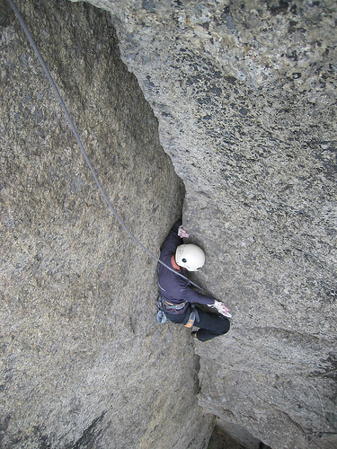

GPS: 64.105227,17.183230
En klippa att drömma om. Stor klättring, med en samling av Sveriges mest givna spricklinjer. Klippan ligger i byn Sörnoret utanför Åsele. Ett utmärkt stopp på väg till eller från Lofoten!

En klippa att drömma om. Stor klättring, med en samling av Sveriges mest givna spricklinjer. Klippan ligger i byn Sörnoret utanför Åsele. Ett utmärkt stopp på väg till eller från Lofoten!
I Åsele samhälle vid stallet/ishallen, tag av mot byn Sörnoret. Det står “13 Sörnoret” på skylten. Denna väg är densamma som man tar om man ska till flygplatsen. Fortsätt på denna väg tills du kommer till byn Sörnoret. Från byskylten i Sörnoret är det cirka 3,6 kilometer tills du ska parkera bilen. När du passerat byn och kört ett tag så kommer det en skylt med “Här slutar allmän väg”. Forsätt förbi denna skylt och kör efter vägen tills det dyker upp en skylt som pekar mot höger med texten “Offerhällan 2 Bergvattenberget”. Vid början på denna väg finns det en bom och den kan (enligt rykten) vara stängd ibland. Kör på denna väg cirka 1 km tills ni kommer till en skylt som pekar mot höger mot en stig. På skylten står det “Offerhällan 0,9 Bergvattenberget”. Stigen leder till rastplatsen på toppen av Offerhällan. OBS! Blöt stig. Kan vara olämpligt med lågskor om det har regnat mycket. Från ishallen i Åsele till där man lämnar bilen vid Offerhällan är det 16 km.
Vid toppen av klippan finns fina tältplatser och ett utedass. Däremot finns inget vatten. Däremot går det bra att campa mitt i byn vid bron. Då får man både dricksvatten (Ångermanälven?) och badmöjligheter. Lyxalternativet är att hyra in sig i den superfina byastugan. Se
för mer information.
Du kommer fram till toppen av klippan. Med utsikt över vattnet så har du
rakt nedanför vindskyddet. 30 meter till höger har du uttoppningen på
och ett
firningsankare
(OBS! 60 meter ner till backen!).
och omkringliggande leder ligger ytterliggare 75 meter åt höger, fortsätt stigen bort så får du efter ett tag en väldigt fin överblick över det här området om du söker dig ut mot kanten. Lättast tar du dig ner och upp i den stora rännan (södra vägen)m h a ett fixrep.
och omkringliggande leder ligger 75 meter till vänster om vindskyddet. Ska du klättra dessa är det lättast att fira ner från firningsankaret på toppen av
. Firningsankaret som ligger ungefär 50 meter norr om vindskyddet (vänsterut om man tittar ut mot sjön) kan vara lite svårt att hitta, men följ nedersidan av en några meter hög klippvägg som går diagonalt nordöst mot toppen av sektorn. Firningen är 59 meter och helt frihängande. Om du vill gå ner rekommenderas den norra vägen, det vill säga åt vänster från vindskyddet. Först blå snitsling och sedan gul/röd för dig ner i en ravin med ett stort klämblock i toppen. I ravinen finns det ett fixerat rep. Följ snitslingen neråt och sedan åt höger så kommer du till
och strax där efter
.
Som namnet antyder är Offerhällan på Bergvattensberget en gammal samisk offerplats. Självaste klippan var besjälad av en gud. En avgudabild i trä fanns uppsatt på klippan. Avgudabilden togs ned och förvarades i kyrkan i Åsele, men träfiguren försvann när kyrkan brann ner på 1930-talet. Vid klippan har det har även hittats långa trädgrenar som användes för att piska gudarna/klippan om offren inte gav önskad effekt. Från en klättrares synvinkel upptäcktes klippan på 1970-talet men det dröjde till slutet på 1980-talet innan
Tommy Nilsson
och
Anders Lindh
aidade det som idag är
. När sedan
Anders Linder
,
Jens Åström
,
Tommy Nilsson
med flera plockade fram borstarna kring 2003 så blev det den egentliga starten på det Offerhällan vi har idag.
Peblin har gjort en fotosynth av Utomjordings bilder. Starta Internet Explorer, surfa hit, installera plugin och klicka runt.
(Från vänster till höger sett nerifrån, höger till vänster sett uppifrån) {| |- valign="top" | width=300px|
Vägvisaren och Ljudvallen når man genom att klättra upp via en trästege och ett fast rep upp till en hylla.
Kategori:Lappland Kategori:Trad Kategori:Vertikalt Kategori:Överhäng
Kategori:Västerbotten Kategori:Engelska
A mighty wall looming over the village
Sörnoret
, outside the town
Åsele
in Lappland. Mostly two-pitch routes. The routes at the main sector all have a verical first pitch followed by an overhanging pitch. Routefinding is not exactly an issue, as almost all routes follow major cracklines. The crag is approached from the top, and some routes can only be accessed by rappel.
Several of the routes feature wide cracks, or cracks that are wide in part. It is good to have cams up to a fist-sized piece (Friend #4 or Camalot #4). In order to be able to do all routes offwidth-gear is also needed (Friend #5 & #6 and perhaps a big bro #4). For rapping down to the main sector (recommended, although hiking in via "Norra ravinen" is also possible) an extra 60 meter rope is necessary. A 60 meter rope is also needed for rapping down to
Ljusbågen
. The route "En feting" cannot be accessed by any other means then rapping in from the top. (See map)
From
Åsele
, drive towards
Sörnoret
. After driving through Sörnoret drive past a sign stating: "Här slutar allmän väg" (Public road ends here). Keep going along this road until the sign "Offerhällan 2 Bergvattenberget" points you right. Drive a kilometer until you see the withered sign that once upon a time read "Offerhällan 0,9 Bergvattenberget". Park your car and follow the trail over the bog and up the hill. In total 16 kilometre from Åsele.
Kategori:Lappland Kategori:Trad Kategori:Vertikalt Kategori:Överhäng
Kategori:Västerbotten Kategori:Engelska
Copyright (C) Permission is granted to copy, distribute and/or modify this document under the terms of the GNU Free Documentation License, Version 1.3